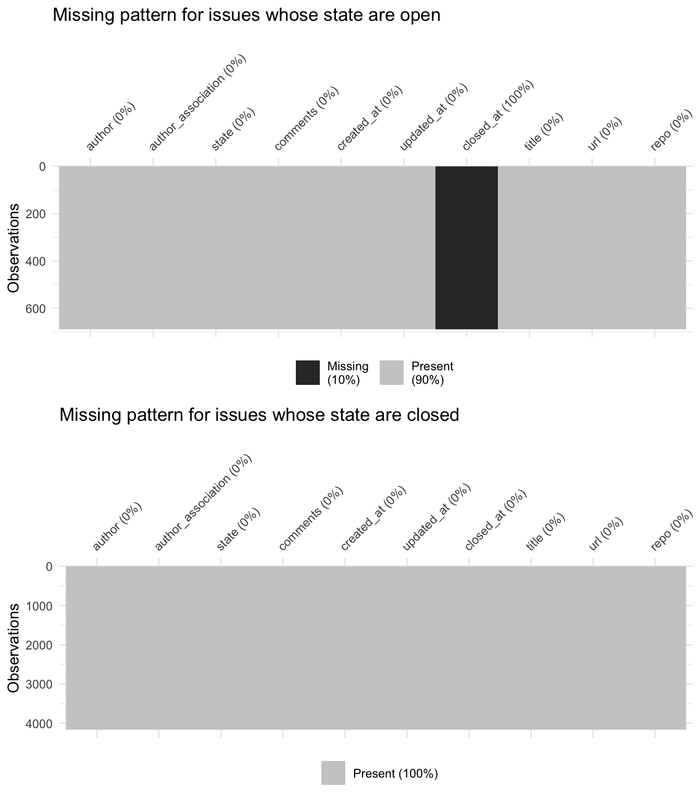
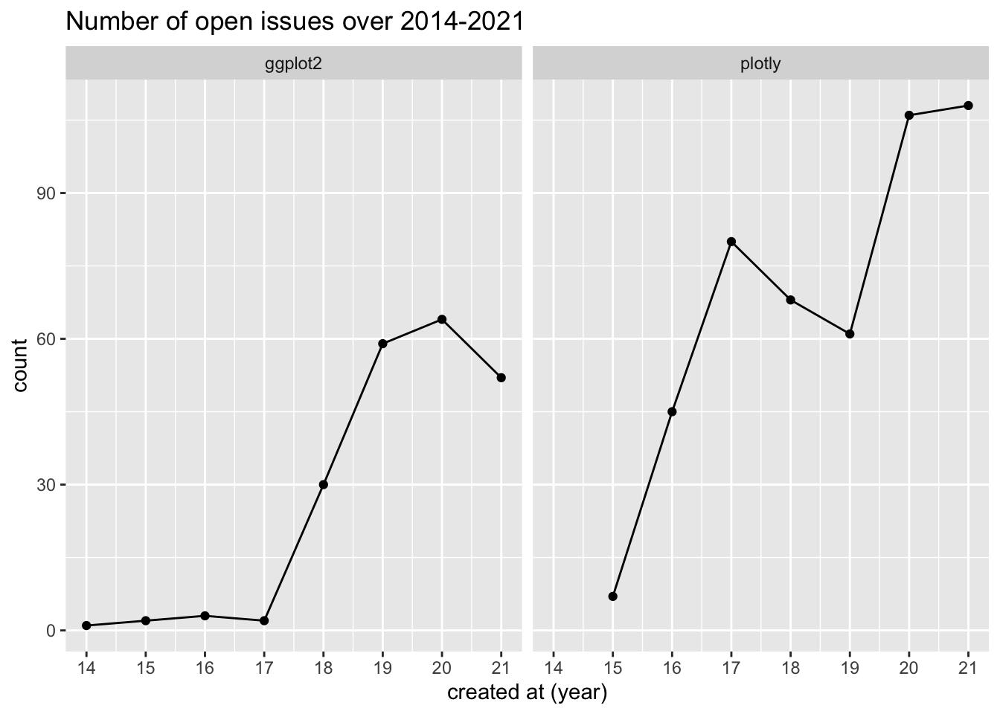
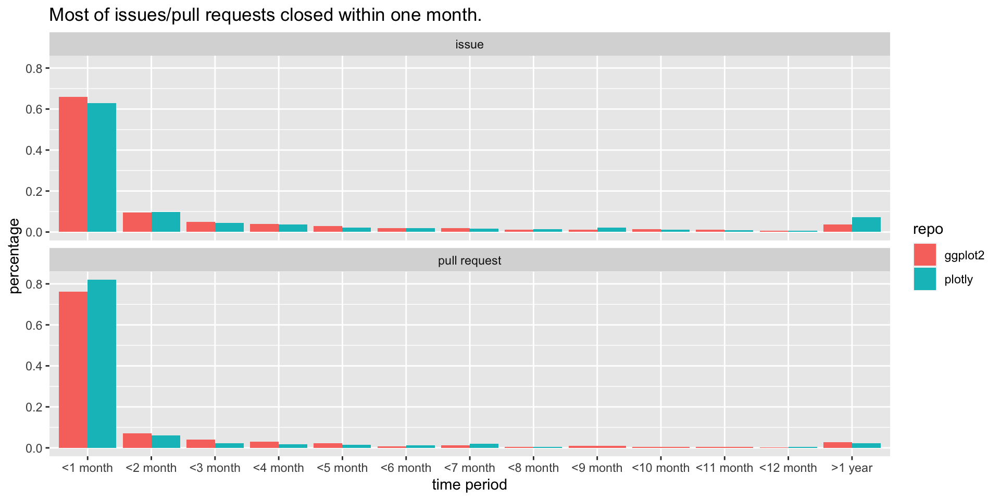

Chapter 6 Are open cases amounts increasing?
Let’s first dive into the open issues. We can see that the percentage of “open” issues (issues whose status are still open) increases for plotly, especially for the past three years. Although we would expect some increases since earlier created issues are given more time to solve, yet plotly’s increases is substantial (from 30%+ in 2019 to 50%+ in 2020 and to 70%+ in 2021). When compared to ggplot, plotly’s percentage of both issues and pull requests are much higher even though plotly has fewer issue and pull requests than ggplot in absolute terms. 
6.1 How long does it take to solve issues and pull requests?
Next, let’s move our attention to closed issues and pull requests. We calculate issues and pull requests’ solved time (which is defined as close time - create time) and divided the time into periods of 30 days (or 1 month). And we can see most of issues/pull requests were closed within one month but plotly seems to have larger percentage of issues that were open for more than one year. 
6.2 Do different years have different solving pattern?
Breaking down the percentage over 2014-2021, we can see that both packages seems to having a trend of taking longer to “close” their issues. But the pattern is very different for pull requests, the percentage of pull requests closes within one month increases for the past several years. The contrast is most spark for plotly in 2021, only about 25 percent of issues are closed within two months, but over 80% of pull requests are closed within one month. 